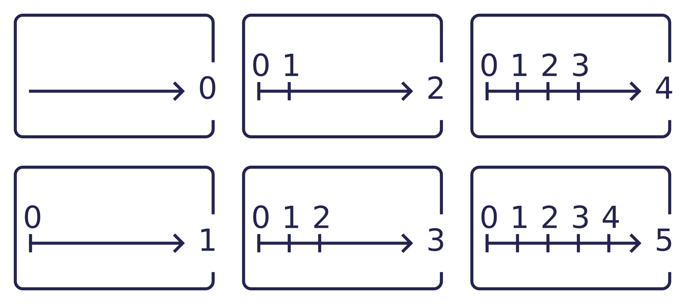
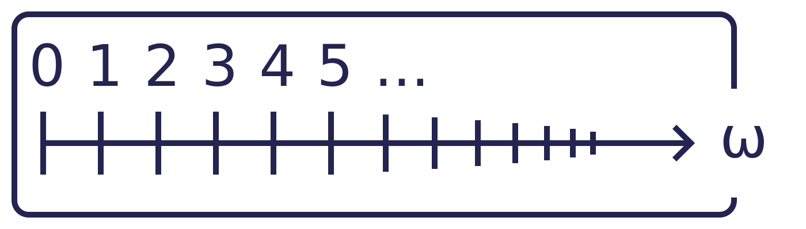

Extraordinary ordinals
How to count?
Orders!
When counting, one gives an order to things. There is the first thing, the second thing, the third thing, ... and sometimes, when there is nothing at all, there is a total of zero things. As you notice, counting in intrinsically bonded to the idea of order.
Not any orders, in fact! When dealing with finite sets, only those which are total orders allows to count. By this, we mean orders on a set such that every two elements $a$ and $b$ are in relation: either $a < b$, $a > b$ or $a = b$. This may seem like an unnecessary remark, but the study of partial orders is particularly interesting (but we won't deal with them here).
One order is good, but two is better! Consider the usual ones on $\{0,1,2\}$ and $\{3,4,5\}$? They look different, but are pretty similar: they both have elements, both have a first, second and third element and both doesn't have a fourth element. In fact, they are said to be isomorphic, i.e. up to a change of label, they are identical. I will often use the symbol $a \mapsto b$ to tell "let's rename $a$ into $b$".
Before moving on, let's ask ourselves what we like when we count. If we are to generalize counting, we need to get rid of a few properties and, most importantly, to keep some. When we count in the usual set $\mathbb{N}$ of the natural integer, we notice something: every subset $S$ of $\mathbb{N}$ has a least element (i.e. an element less than any other element in $S$). So, we may want to go with that: every order we'll consider will have this property, and we will call them well-orders.
An equivalent property to being well-ordered for an ordered set $S$ is that there is strictly decreasing sequence of elements of $S$. Still using the $\mathbb{N}$ example, try and find a strictly decreasing sequence of integers. If you can't, that is normal, because such a thing does not exists.
We may now try to find a classification of these order, and for each class, a quintessential order. In fact, we'll do the opposite: find the most nominee possible and then hope that every finite total order is isomorphic to some of them.
Numbers?
Let's look at a few particular sets. The zeroth one is $A_0 := \emptyset$, the first one $A_1 := \{\emptyset\}$, the second $A_2 := \{\emptyset, \{\emptyset\}\}$ and the $(n+1)$-th is the set containing all the previous ones, that is $A_{n+1} := \{A_1, A_2, \dots, A_n\}$. You first notice that if $n < m$, then $A_n \in A_m$ (read: $A_n$ is in $A_m$ or $A_m$ is an element of $A_m$).
Sidenote here: we often use the notation $a := b$ to say: "let's define $a$ by it being equal to $b$", where $b$ is often complex-looking. This differs from the usual $a = b$ being only a statement: "I state that $a$ and $b$ are equal".
Let's do the converse: let's define an order by saying that $x < y$ if and only if $x \in y$. This may seem overly complex (and complex it is), but bear with me and look at what we've just done. Starting with the empty set, we created a family of thing that behave just like the plain good old natural numbers. So, rather than calling this family $A_0$, $A_1$, $A_2$, $A_3$, ..., let's say that these are the natural numbers, the ones usually called $0$, $1$, $2$, $3$, ...

Here I come to warn you: from now on, things will get weirder and weirder. For instance, with this definition, a number is both an element and a set; $5$ is a set with five ordered elements, but also the greatest element of $6$.This may look like a weaknes or an overly-complex thing to do, but it will have its use.
So, why would we do that? Why would we call these things "numbers"? Because saying what a number precisely is is complicated (try it for yourself: how would you define a number?) and here, we just have a nice recipe! To be extra precise, we often call them "ordinal numbers", or simply "ordinals".
A closer look at the process we used to create our natural numbers shows that $n+1 := n \cup \{n\}$. That is, $n+1$ is the union of the set $n$ (so it contains every element that $n$ contains) and of the set containing only $n$. Imagine taking a big box an tossing in it the content of $n$ and then $n$ itself. That big box is now $n+1$.
To infinity!
Now that we can count as high as we want (but please, don't do drugs), we still want more! And here comes the deus ex machina, the axiom saving us: the collection of all natural numbers is a set. Let's call it $\omega$. Why does its existence matters ? Because, we can apply our number making recipe again and call $s(\omega) := \omega \cup \{\omega\}$ and define $s(s(\omega))$, $s(s(s(\omega)))$, ... the same way.
Before we go further, we should notice that what I called $\omega$ may look like what is usually called $\mathbb{N}$. Why naming it differently? Because I swiped a few things under the rug, some weird technicalities, like that we cannot be sure that $\omega$ and $\mathbb{N}$ are exaclty the same object, that $\mathbb{N}$ do is a set and some other odd stuff. You shouldn't care too much about this, because a teacher once told us that "it is a matter of faith".
Good, we have new number candidates. But how does they relate to orders ? Well, $\omega$ as a set is like an infinite ladder, with steps going higher and higher, unbounded. $\omega$ as an element is something bigger than any of the previous regular finite natural integer. Then, $s(\omega)$ as a set is like the previous ladder, but with a final step, although this step lacks a predecessor: we somehow have all the natural integers and then, a last element.

In fact, I used the notation $\alpha+1$ and $s(\alpha)$ for some ordinals, the former for finite ones and the latter for infinite ones. What is the difference? The latter means "the successor of $\alpha$", while the former is ... unclear?! It may means the same as before for finite ordinals, but what does adding means for infinite ones? As you may have noticed, we don't know how to add infinite things.
Addition
When adding $n$ and $m$, you count "one, two, ..., $n$, $n+1$, ..., $n+m$". In other words, you concatenated the order on $n$ with the one on $m$. We need to be cautious here, because, as we defined earlier, we may have $1 \in n$ and $1 \in m$. So, to unfog any ambiguity, let's call $x'$ the elements of $m$ (and so, $n := \{ 0', 1', 2', \dots, (n-1)'\}$) and and define the new order on $n \cup m$ by saying that every element in $m$ is bigger than any element in $n$.
How does that help? Well, because we have a total order on a set, it corresponds to a number: here, $n+m$. For instance, if $n:=2$ and $m:=3$, then the set corresponding to $n+m$ would be $\{0,1,0',1',2'\}$, with the order $0 < 1 < 0' < 1' < 2'$. And this one is isomorphic to the order on $5$ (as a reminder, $5 := \{0,1,2,3,4\}$). So we say that $2 + 3 = 5$.
Let's do that, but with $\omega$. Put $n := 1$ and $m := \omega.$ Consider the set $(1 + \omega) := \{0,0',1',2', \dots \}$, ordered with $0 < 0'< 1' < 2' < \dots$. Well, if we do the following renaming : $0 \mapsto 0''$, $0' \mapsto 1''$, $1' \mapsto 2''$, $2' \mapsto 3''$,... we have what I called sooner an isomorphism between $(1+\omega)$ and $\omega$. Following the logic, we now have $1+ \omega = \omega$. Strange.
What if we do the opposite? Put $n := \omega$ and $m := 1$? We find the set $(\omega + 1) := \{0,1,2, \dots, 0'\}$. And by renaming $0 \mapsto 0''$, $1 \mapsto 1''$, ..., $0' \mapsto \omega''$, we have that $(\omega + 1)$ is isomorphic to $s(\omega)$.
On one hand, this is comforting: I sooner claimed that $s(\alpha)$ and $\alpha + 1$ are very similar for finite ordinals, and now we have the same result for an infinite one. On the other hand, addition does not seems to be commutative (i.e. $a + b$ is not necessarily equal to $b + a$), and on that, we will need to be very cautious.
So, we can work out things like $\omega +2$, $\omega +1312$ and everything that is of the form $\omega + n$, $n$ being a finite number. But what meaning should we give to $\omega + \omega$? Surely, something like "omega, but twice".
Multiplication
Then we need multiplication. Again, lets look at small exemple. Put $n := 2$, $m := 3$ and let's look at $n \times m$. The usual way of doing that is with rectangle, of height $n$ and width $m$. To represent it using sets, we'll do the cartesian product, or set multiplication, between $n$ and $m$; that is the set of all possible pairs. So we have $(n\times m) := \{(0;0), (1;0), (0;1), (1;1), (0;2), (1;2)\}$ or, using the prime notation, $(n'\times m) := \{(0';0), (1';0), (0';1), (1';1), (0';2), (1';2)\}$.
Again, we'll now need an order on this set! The convention (and to be clear, it is only a convention, but a really observed one) is to give it the anti-lexicographic order. This barbaric piece of jargon means that the in order to compare two pairs, you first compare the right-most coordinates of the two pairs and then, if they are equal, the coordinates to the left.
To be clear, with that mean of ordering in mind, we have $(10,2) > (20,1)$ because $2 > 1$ (and so here, we do not care about the order between $10$ and $20$). We also have $(10,3) < (20,3)$, because $3 = 3$ and then, $10 < 20$. Also, the name lexicographic means "like in a dictionnary", because you compare the first letters of two words and then the second ones, and so on.
In our previous example, we thus have the ordering $(0;0) < (1;0) < (0;1) < (1;1) < (0;2) < (1;2)$, which, by a clever renaming, can be seen as the order on $6 = \{0,1,2,3,4,5\}$. We've just seen that $2 \times 3 = 6$. Hurray! Again, we redo this example on $(3 \times 2) := \{(0;0), (1;0), (2;0), (0;1), (1;1), (2;1)\}$. We notice something: $(3 \times 2)$ and $(2 \times 3)$ are two different sets, but happily, they are isomorphic. Now, let's see what happens with $n := \omega$ and $m := 2$.
We do have $(n \times m) = \{(0;0), (1;0), (2;0), \dots, (0;1), (1;1), (2;1), \dots , \}$. And about the order on that set ? Well, we have $(0;0) < (1;0)< (2;0) < \dots < (0;1) < (1;1) < (2;1) < \dots$. Here, you may start to wonder : "Have I ever seen that before?". Well, yes, because it looks like a sum, but no, because I skipped it. Try and add $\omega$ to itself: you fisrt have a copy of $\omega$, and then a second one. It would look like $(\omega + \omega) = \{0,1,2, \dots, \omega, \omega + 1, \omega +2, \dots\}$. With the renaming $0 \mapsto (0;0)$, $1 \mapsto (1;0)$, ..., $\omega \mapsto (0;1)$, $\omega +1 \mapsto (1;1)$, ..., we have an isomorphism between $\omega + \omega$ and $\omega \times 2$.

With the same argument, we find out what $\omega \times 3$ and, more generally, $\omega \times n$, for any $n$ finite, are: it is the concatenation of $n$ infinite ladders. Let's now do the converse: $2 \times \omega$. We already know that, as sets, $2 \times \omega \neq \omega \times 2$, but could they be isomorphic?
Sadly, they are not. We have $2 \times \omega := \{(0;0), (1;0), (0;1), (1;1), (0;2), (1;2), \dots\}$, with the order given by $(0;0) < (1;0) < (0;1) < (1;1) < (0;2) < (1;2) < \dots$. You may alreday see that it will only be isomorphic to $\omega$, because of the isomorphism given by $0 \mapsto (0;0)$, $1 \mapsto (1;0)$, $2 \mapsto (0;1)$, ..., $2k \mapsto (0;k)$, $2k+1 \mapsto (1;k)$, ... It may be easier for you to see the inverse renaming, given by the rule $(\varepsilon;k) \mapsto 2k+\varepsilon$. So, as ordinals, $\omega = 2 \times \omega$.
We now know how to multiply $\omega$ by any finite ordinal. But what about $\omega \times \omega$? Namely, it is the set of all pairs of elements of $\omega$, ordered with the anti-lexicographic ordering. I here you wonder "is it something akin to $\omega^2$, whatever that means?". Well, yes, but in this case, we need a new operation: exponentiation.
Exponentiation!
No surprise here : first, let's see how it works on finite ordinals (aka natural numbers). Put $n := 2$, $m := 3$ and consider $n^m$. If your intuition whispers "$8$", you're correct. But how to see that ? Well, we consider the set of all triplets (also called $3$-uple) made out of elements of $2$. In other words, that is the set of elements of the form $(a;b;c)$ where $a$, $b$ and $c$ are elements of the set $2$. I could list it, but I won't.
To be extra clear, an element from $2^3$ can be seen as a function from the set $3$ to the set $2$: the element $(0;1;0)$ is the map $0 \mapsto 0$, $1 \mapsto 1$ and $2 \mapsto 0$. To keep the little sanity I still have, let's use notation $a[n]$ to represent the $n$-th element from the uple $a$, that is to say $a(n)$ if we consider $a$ to be a full-on function.
Again, we're looking for ordinals, so we need an order on that $2^3$ thing. Let's choose the same as before: the anti-lexicographic ordering. So $(0;0;0)$ is the first element, $(1;0;0)$ the second one, then comes $(0;1;0)$, $(1;1;0)$, ... and finally, $(1;1;1)$.
Let's generalize! So, we take $n := \omega$, $m := 2$ and we consider the set of function $f: 2 \to \omega$. And we give it the anti-lexicographic ordering. But what does it even mean? Well, you already know: here, such a function $f$ is wholly defined by its value on $0$ and on $1$; so it looks like the $2$-uple $(f[0];f[1])$. In fact, the set $\omega ^ 2$ is the set of all pairs of numbers.
$f : 2 \to \omega$ should be read as "the function $f$ with domain $2$ and codomain $\omega$". In general, we speaking of a function, $S \to T$ is more generally a function from the set $S$ to the set $T$.
Anti-lexicographic still means "first compare the right-most coordinates, and then the one to its left (and so on)", so you know how to deal with that. And now, we can count up to $\omega^3$ and even $\omega^n$, with $n$ any finite ordinal.
Let's try our new operation on $n := \omega$ and $m := \omega$. So we consider $\omega^\omega$ the set of $\omega$-uple made out of elements of $\omega$, also called "integer sequences", which we'll see as functions $\omega \to \omega$. Although here comes a trap: we cannot use our magical anti-lexicographic ordering in order to have a well-order. Consider the sequence of sequences $u_0 := (1;1;1;1;\dots)$, $u_1 := (0;1;1;1;\dots)$, $u_2 := (0;0;1;1;\dots)$, ... It is a stricly decreasing sequence, the kind we forbid early on.
We need a way out. We'll find it by restricting our functions to those with finite support. Here, the support of a given sequence (aka function, aka $\omega$-uple) $f : \omega \to \omega$ is the set of all elements $x$ such that $f[x] \neq 0$. This way, the elements like $u_0$, $u_1$, ... previously defined are not taken into account. This way, there is no stricly decreasing sequence in the set of functions $\omega^\omega$.
An other way to express this condition of finite support is to say that any of these sequence eventually stabilize at zero; although this is not a very generalizable. Indeed, if you try and calculate $\omega^{\omega + 1}$, this stabilization condition is not well defined.
The set of finitely-supported functions from $\omega$ to $\omega$ is often denoted $\omega^{(\omega)}$. More generally, the set of finitely-supported functions $\alpha \to \beta$, with $\alpha$ and $\beta$ being two ordinals, is denoted $\beta^{(\alpha)}$. It allows to differentiate from the ordinal $\beta$ to the $\alpha$ from the associated set of function.
You may want a drawing of $\omega^\omega$, but sadly, I don't know of any way to represent it. $\omega$ is a ladder, $\omega\times 2$ is two ladders, and so on, $\omega^2$ is a ladder upon which a ladder is attached to every step, $\omega^3$ is a ladder upon which a a copy of $\omega^2$ is attached to every step, and so on. So $\omega^\omega$ is huge.